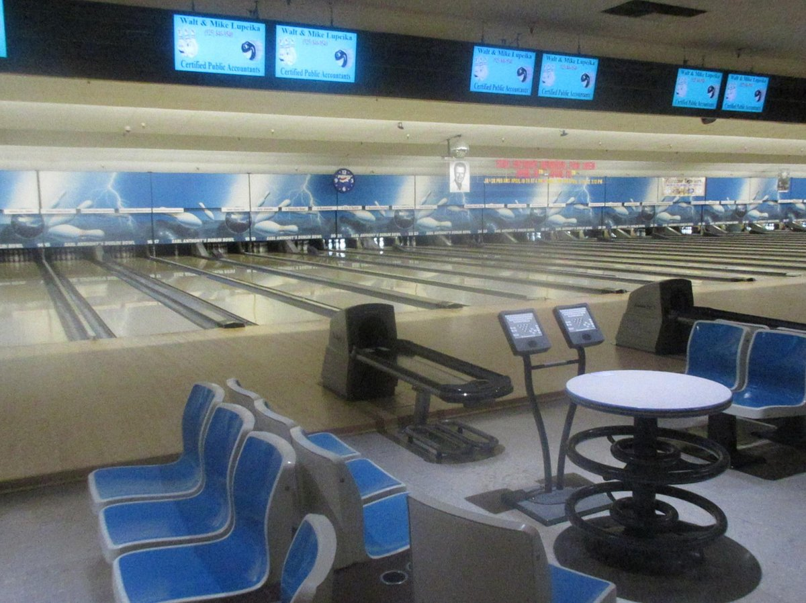
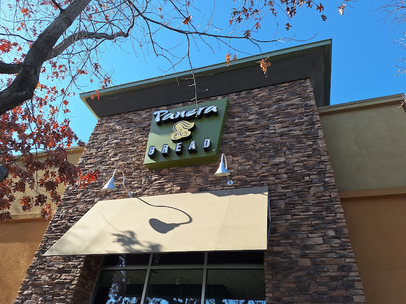

This circle marks our first date. We went bowling in Dublin and to Panera for dinner! I was so nervous when walking up to your door, but when you opened it, all I could think was how pretty you were. I loved how competitive you were when we played, and I had a lot of fun that night. I was quite shy and I didn't know what to talk about, so I apologize for that, but I still hope you had fun! I liked how we just went on a walk afterwards, plus you give amazing hugs!